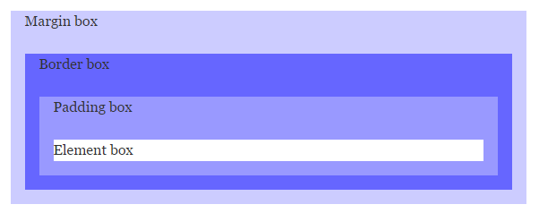

Супер предложение!
Купите сейчас и получите скидку 50%!
Узнать больше
Margin
Краткая информация
Описание
Свойство margin задает поля (внешние отступы элемента) — отступы от внешней границы
элемента до границ родительского элемента или до соседних элементов (рис. 1).

Рисунок 1 - Блочная модель
Строчные элементы реагируют только на горизонтальные отступы.
Значения
Разрешается использовать одно, два, три или четыре значения, разделяя их между собой пробелом:
- Поля будут установлены одинаково от каждого края элемента (
margin: 10px).
- Первое значение устанавливает поле от верхнего и нижнего края, второе — от левого и правого (
margin: 5px 10px).
- Первое значение задает поле от верхнего края, второе — одновременно от левого и правого края, а третье — от нижнего края (
margin: 5px 10px 15px).
- Первое значение задает поле от верхнего края, второе — одновременно от левого и правого края, а третье — от нижнего края (
margin: 5px 10px 15px 20px).
Возможные значения: одно, два, три или четыре следующих значения: ширина (задается в стандартных единицах
длины), процент % (задается процент от родительского элемента), auto (расстояние будет рассчитываться
браузером автоматически).